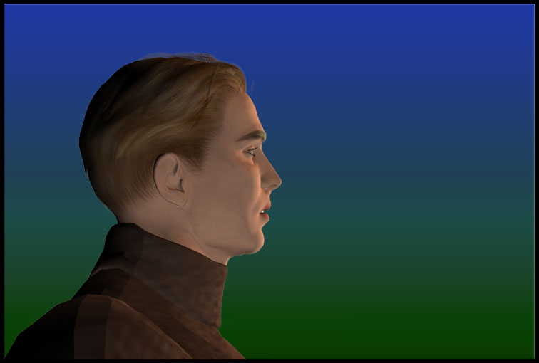
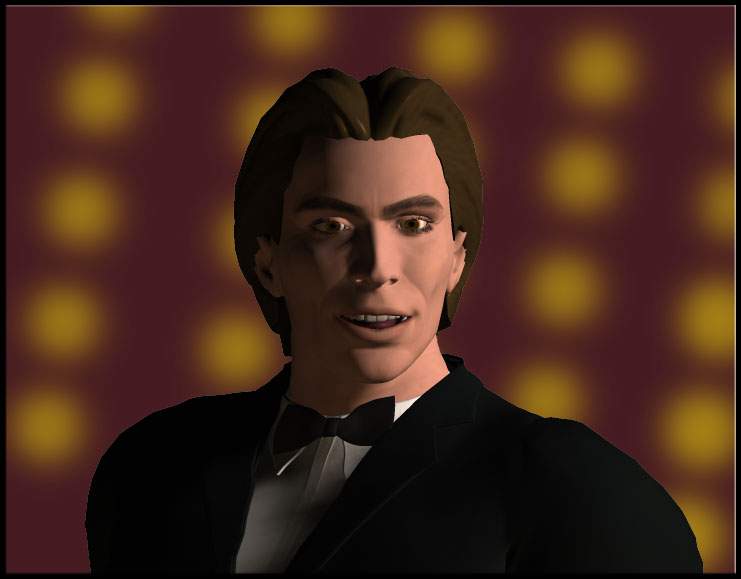

Receptionist (In French) Mr. Patterson... the doctor will see you now

KJ (Wolfing down the remaining half) Merci
Doctor Hello, Jack - in town on business again?
KJ (Collapsing into an oversized chair) Yep
Doctor It's good to see you
KJ Yep
Doctor I hope you say more than that or this is going to be a very brief session
KJ Yep
Doctor Okay then, shall we continue where we left off?
KJ Yep
KJ Sure, why not?
Doctor Your mother...
KJ That bitch
Doctor Well, at least that's a start
KJ I hate her
Doctor Yes, we've already established that
KJ She's never there for me anymore — she couldn't even be there on my... - do you know where she is today?
KJ WHERE SHE IS EVERY DAY OF HER MISERABLE LIFE — PLAYING TENNIS — GOD DAMN TENNIS...
Doctor You said she used to be a professional?
KJ DECADES AGO
Doctor Maybe this is what she feels comfortable with right now
KJ Shouldn't she feel "comfortable" with her own children?
Doctor Tell me, why does it make you so uncomfortable?
KJ BECAUSE OUR WHOLE FAMILY, OUR WHOLE LIFE HAS BEEN TURNED UPSIDE DOWN, INSIDE OUT, AND SHE'S STILL PLAYING WITH A STUPID BALL
Doctor Are you jealous of the ball, Jack?
KJ (Sniffing and clearing his throat) YES, okay, yes — my sister used to constantly complain about it but I always took mom's side — NOT ANYMORE
KJ Maybe... JUST MAYBE, if she took one ounce of the effort it takes to swing a racket and placed it into, oh I dunno, MOURNING MY FATHER — GIVING A DAMN ABOUT MY INCREASINGLY DISTANT SISTER — OR HELPING ME WITH THE FAMILY BUSINESS... maybe my life would be less stressful!
Doctor Is that your mother's job — to make your life less stressful?
KJ She sure as hell could help
Doctor Did you ever consider that your mom is using tennis to escape the stress?
KJ I'm sure she is but it's time to be an adult and live up to your responsibilities
Doctor Are you talking about yourself now?
KJ (Shifting in his seat) Someone has to be the grown-up in the von Meer house — now that dad is gone, it sure ain't my mom or Erika
Doctor It is possible that your mother is mourning your father but she has to channel that into serving an ace — maybe she can't reach your sister because you yourself said she is distant, so your mother hits a lob... is this making sense?
Doctor And as for helping you with the business, a backhand down the line is the best she can do
KJ Stop helping her with excuses, you're supposed to be helping me!
Doctor I am helping you, Jack — I'm trying to help you realize that you cannot always expect those around you to behave the way you want them to or to give more than they possibly can — you help yourself by realizing others' limitations and to count on yourself, first and foremost
KJ I don't need a pep talk, doc
Doctor You need a talk, you need to talk, you are participating in a discourse with me that is designed to enlighten you about the dark and unsettling areas of your life — that is why you are here, Mr. Patterson
KJ Actually, I came for those delicious strawberry muffins in the waiting room — mind if I go grab another?
Doctor You can... but instead of concentrating on food, why don't you concentrate on the feelings you are experiencing right now?
KJ I'm experiencing hunger
Doctor Are you? — maybe it's a different kind of hunger — maybe what you are feeling right now is so disturbing that you would rather deal with the muffin the same way your mother deals with the tennis ball
Doctor Shall we continue or do you want to go get a muffin?
KJ Nevermind, I've lost my appetite
Doctor Why don't we shift the focus to your father?
KJ (Mumbling) I suppose we could
Doctor How is his death having an impact on you?
KJ I still can't believe he's gone — it's been months but it continues to feel so unreal to me
Doctor Explain
KJ I guess because it happened so suddenly — I know after the age of 50, it's not as surprising for people to die - but he was in fine health... and it wasn't like we couldn't afford the best doctors in the world
KJ The feeling of guilt is what's really eating me and probably why I'm eating every baked good I can get my hands on... he tried so hard to get me more involved in our business but I didn't care, I always assumed my sister would be the one to step up
Doctor And she hasn't?
KJ Now she is starting to poke her unwanted nose around but only because the company is soaring
Doctor Do you not feel a sense of achievement because of this?
KJ I should... shouldn't I? — I mean, I have done more than my share, it's not all Riff's doing although I'm sure he thinks so
Doctor Riff is your business partner?
KJ Who is Riff, really?
KJ We grew up together like brothers and, yes, he is my business partner — but now, watching him work these last several months, I honestly couldn't tell you who he is — I can't even tell you who I am
Doctor Do you admire this man? — do you resent him?
KJ Yes to both — he's had to deal with a lot of corporate crap living under the shadow of his prick father — as a kid, he always used to say that he wished my dad was his...
KJ Everyone thought my dad was the greatest...
Doctor You don't agree?
KJ No, I do - that's the problem
Doctor Do you feel like you can't live up to that?
KJ I don't even wanna try — but now, I'm forced to
Doctor Is Riff forcing you to live up to your father?
KJ No... he has always wanted me to be my own man, take more control of a situation, handle things better — exactly the way Riff does
Doctor Have you recast him in the role of your father?
KJ GOD, I hope not!
Doctor Do you feel like you have to compete with him?
KJ That's the thing, I don't want to compete with ANYONE, I only wanted to do my own thing and help people out where I could
Doctor A noble goal — why have you stopped pursuing it?
KJ (Rubbing his face with his hands) Because I was forced to
Doctor By whom?
KJ More like by "what"
KJ I'm done talking about Riff
Doctor Alright, instead of talking about individual people, let's talk about another subject altogether — how would you best describe your former love life and how do you reconcile these feelings in your personal relationships today?
KJ Sorry, dude, I have GOT to get another one of those muffins before we even start down this road!
Doctor Help yourself
Doctor (In French) Are you getting all of this?
Doctor Now, do you want to go from past to present or backtrack?
KJ (Licking his fingers) I can actually condense this pretty quickly for you... it was party time all the time for me, Riff, and Rikka when we were young — it's one of the perks of being mega rich
KJ I absolutely enjoyed every minute of meaningless pussy with a bunch of easy, smoking-hot bimbos for well over a decade — honestly, if you showed me pictures of these girls, I couldn't pick them out if my life depended upon it...
Doctor A cavalier but not a highly uncommon approach
KJ I was never mean or abusive but... sure, I used them for fun and physical release, nothing more
Doctor And now?
KJ I can't even stomach, literally, getting emotionally or physically involved with anyone which is highly ironic considering the situation I'm in
KJ The one-night stand parade hit a brick wall when I met two women who rocked my world
Doctor Am I to assume one of them is your...
KJ (Curtly cutting him off) No
Doctor Are these women still a part of your world?
KJ No... Oni is dead
Doctor What happened?
KJ She was needed for other purposes
Doctor That's vague
KJ For good reason
KJ Ona Rosa was the love of my life — my dad thought it was because she represented something I couldn't have since she was already married with kids
Doctor Was he right?
KJ She was so far beyond that to me — it wasn't just her beauty and her amazing legal skills either, she was just... herself
Doctor Did she return your feelings?
KJ Not at first — she fought them and I tried to respect the fact that she had a family
Doctor Did you ever consummate the relationship?
KJ Sorry — we were so close but then... then... no, we did not
Doctor And what about the other woman?
KJ (Deep sigh) Morri — well, let's just say things are very different now
Doctor Can you tell me about her?
KJ I wasn't in love with her like Oni but I did love her — I think she represented "safe" for me... the funny thing is that she is actually anything but safe
Doctor Are you going to be vague again?
KJ Let's just say she was on the run for something she didn't do — the "people" that set her up thought she was taken care of until she showed up at the hospital the day it exploded
Doctor Was she directly involved with what happened?
KJ Heh, we were ALL directly or indirectly involved with what happened
KJ So Morri is back, the trumped-up charges have magically disappeared and I do mean magically - she now works with me at the PCOC and has an increasingly bizarre relationship with my sister
Doctor Are we revisiting Rikka again?
KJ Seems that way, doesn't it?
Doctor How is Morri involved with Rikka?
KJ I suddenly don't feel like talking to you anymore, I'm done for the day
Doctor Remember, Jack, you were the one who sought me out to help you
KJ (Cracking his knuckles) I know — I also know my ring doesn't fit on my finger, my blood pressure has shot up 60 points, the nightmares I had as a child are back full-force... yet, I don't dare drink or pop pills because I need to keep my mind extra sharp for this game!
Doctor And what game is that?
Receptionist (Over speaker) Mr. Patterson's wife is here, doctor
Doctor Thank you
KJ I know it doesn't seem like it but you do help a lot, doc... thanks
Victoria Ready, Honey?
KJ (Smiling) I guess so
Caller Card for the banker...
Businessman Judging by how much money you are losing on this game today... and yesterday...
Businessman You must have complete confidence in your company's current prospects?
Griffin Complete and utter confidence — my business partner is in Vancouver as we speak

Businessman Wonderful, Mr. Martel, because the port negotiations are going to be a major hurdle for you
Businessman And what is a major hurdle for you will be a losing venture for us
Caller (To Griffin) You need to pull a card out of the shoe, sir...
Griffin (Now ignoring the game) I do not anticipate any problem whatsoever with the negotiations
Businessman We all saw what happened when your country's media and citizens got wind of the Dubai deal
Griffin If anyone knows how to fly under the radar, it's the people I work with — besides, this is not an election year and everyone has gone back to teeth bleaching and worrying about the next winner of a TV talent show
Businessman Your assessment is not based on facts, Mr. Martel — I will need more convincing than supposition about human behavioral patterns...
Griffin You are absolutely right — you do deserve more convincing than that...
Businessman Is this one of your negotiators?
Griffin One of many
Businessman (Gagging) WHAT ARE... YOU DOING... STOP... STOP
Griffin Anyone else in need of convincing?
Griffin We are nearly done mining and processing the metal, it will be ready to ship in weeks — there will be no, let me repeat, NO negotiation problems — you, your businesses, and your countries will either reap the rewards with us... or you will be in our way
Griffin Now, if you will excuse me, I have a suite filled with beautiful young women covered in sushi and white lines who are in dire need of my attention, thank you